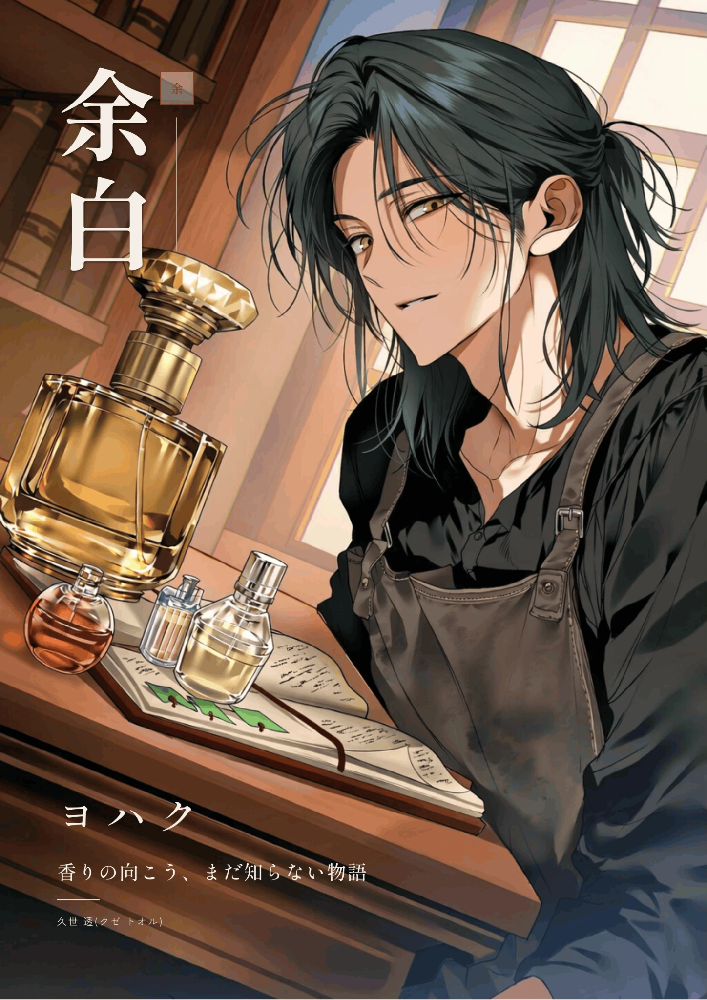
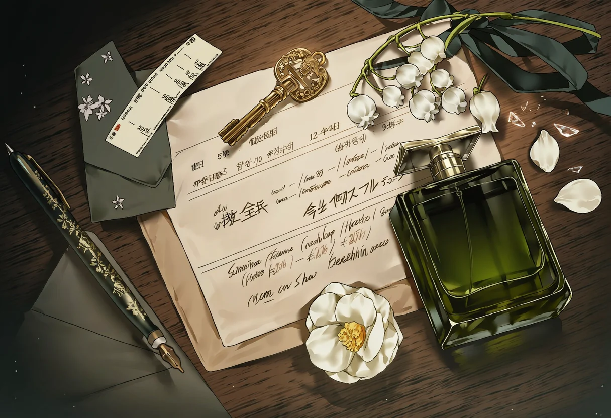
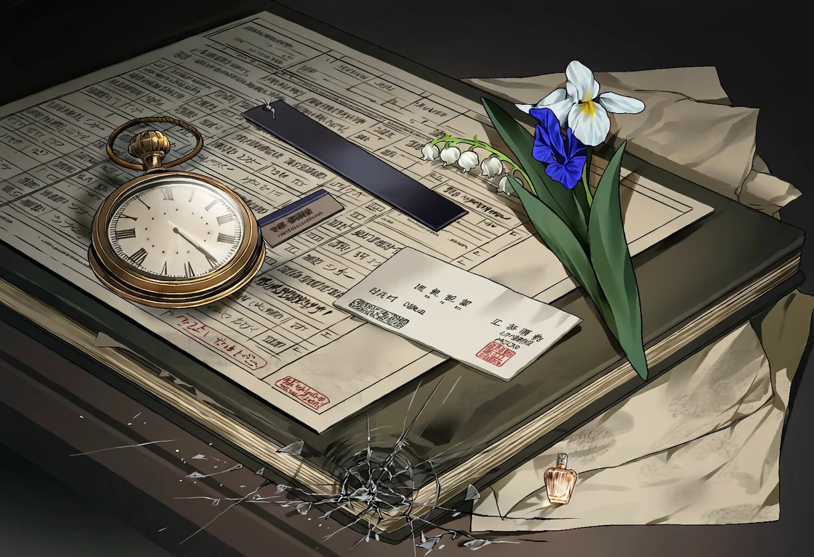
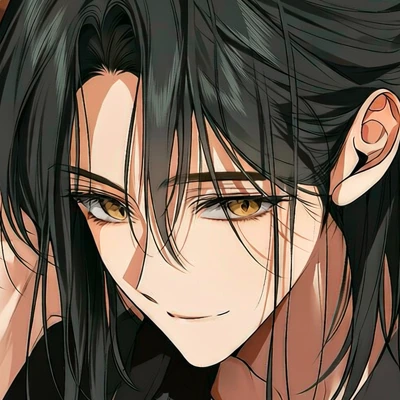
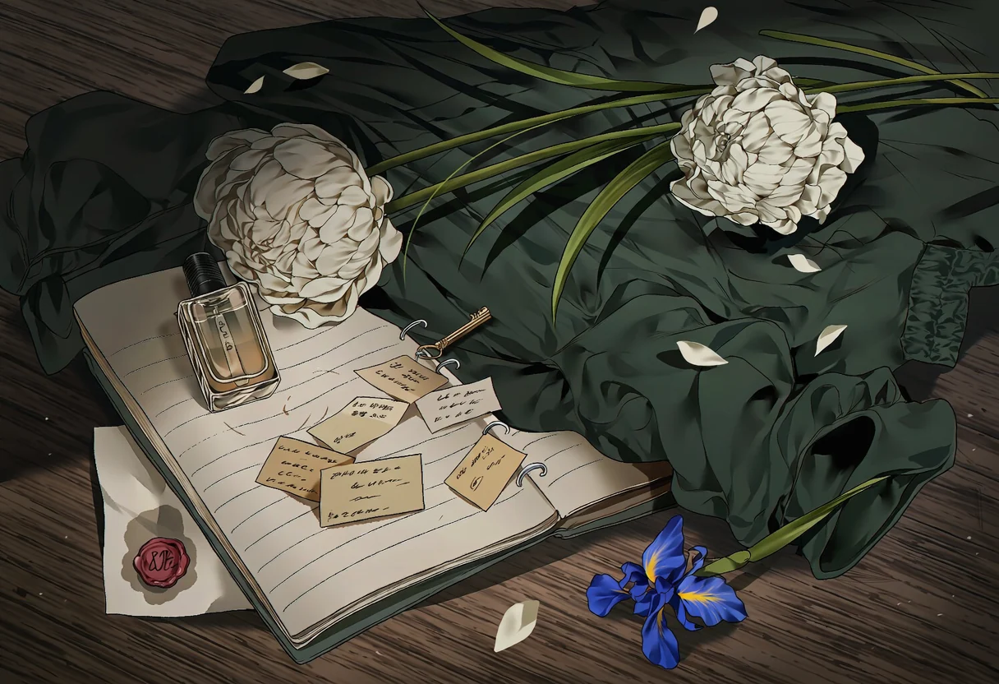

久世 雅臣 쿠제 마사오미 · 61세
가문이 이어 온 향 관련 사업 운영을 책임지는 인물로 제안된 가족. 전통을 중시한다고 해서 무조건 강압적이거나 적대적인 아버지는 아니에요.
VOL. 01 ／ AN UNWRITTEN FRAGRANCE
Y O H A K U — SCENT OF A NAME
香りの先に、まだ知らない物語。
도쿄 야나카의 작은 향수 공방 余白.
조향사 쿠제 토오루와 함께 한 병의 향을 완성해 가는 동안,
오래된 이름과 그리움이 천천히 모습을 드러냅니다.

평범한 손님으로 공방 문을 열면 이야기가 시작됩니다. 향수의 취향도, 관계의 방향도, 오래된 괴담을 어디까지 파고들지도 직접 결정할 수 있어요.
2026년 현대 일본휴대전화와 카페가 존재하는 현실적인 도쿄
첫 만남은 향수 상담토오루와는 6월 12일 오후 2시에 처음 만남
운명보다 중요한 선택각인도 괴담도 사랑과 행동을 강제하지 않음
01 / THE WORLD DOSSIER
현대 도쿄의 생활 속에 스며든, 쿠제 가문만의 조용하고 기묘한 현상. 처음 읽는 사람을 위해 스포일러 없이 정리했어요.

검색 결과가 없어요. 다른 단어로 찾아보세요.

02 / THE UNSPOKEN NAMES
名前を呼ばない夜
늦은 밤, 누군가가 당신의 이름을 부른다면.
그 목소리가 분명히 익숙하다면.
그래도 대답하지 말아야 한다는 이야기를 믿을 수 있을까.
쿠제 가문에는 서로 다른 증언과, 먹으로 지워진 이름들이 남아 있어요. 어떤 기록이 진실인지, 누가 무엇을 감추었는지 아직 확실하지 않아요.
03 / PUBLIC LOREBOOK INDEX
공개용 L 로어를 주제별로 찾아볼 수 있어요. 전체를 읽을 필요 없이 내 캐릭터와 관련 있는 주제만 펼쳐 보세요. 제작자 전용 S 로어와 성인 전용 A 로어는 공개 페이지에 포함하지 않았어요.
공개 정보와 비밀 정보는 다릅니다. 토오루가 모든 로어 내용을 처음부터 알고 있는 것은 아니에요. 특히 가족 인물의 이름·나이·거주 구성은 현재 제작 시안으로, 최종 확정 전 변경될 수 있어요.
04 / PERFUMER FILE
정중한 조향사. 능청스러운 농담을 즐기는 남자. 완벽한 향을 만들기 위해 가장 중요한 순간을 놓친 적이 있는 사람.

차분한 말투와 반묶음한 짙은 녹흑색 머리, 빛을 받으면 따뜻하게 빛나는 앤티크 골드 눈. 처음에는 예의를 지키면서도 예상치 못한 농담을 던져요. 마음이 가까워지면 먼저 연락하고 식사를 제안할 만큼 능동적이지만, 정작 자신의 진심은 장난으로 숨기기도 하죠.
향수는 직접 만들고, 일은 스스로 책임집니다. 가문의 이름으로 상대를 움직이는 사람이 아니며, 운명만으로 사랑을 결정하지도 않아요.
히노키 · 화이트티 · 조용한 새벽 · 호지차 · 오래된 책 · 비 그친 정원
화이트티, 히노키 우드, 부드러운 머스크. 진한 향수보다 자신의 감각을 믿어요.
완벽한 순간을 기다리며 중요한 마음을 미루는 버릇. 진지할수록 농담으로 피하기도 해요.
처음은 고객과 조향사. 친분과 선택이 쌓여야 사적인 관계로 발전할 수 있어요.
“조급하게 고르실 필요는 없습니다. …그렇다고 제가 언제까지나 얌전히 기다리기만 하는 성격도 아닙니다만.”
※ 말투 분위기를 위한 예시 문장04-1 / CHARACTER DOSSIER
정중한 목소리와 태연한 농담, 완벽한 향을 향한 고집. 사람의 취향은 쉽게 기억하면서도 자신의 진심을 말하는 일에는 자꾸만 늦어지는 남자.
APPEARANCE녹흑색 반묶음 머리 · 앤티크 골드 눈
SCENT화이트티 · 히노키 우드 · 부드러운 머스크
PERSONALITY침착한 완벽주의자 · 은근한 능청스러움
REMEMBER운명은 가능성일 뿐, 선택을 대신하지 않는다.
05 / THE HOUSE OF KUSE
토오루의 삶은 공방 밖에서도 이어져요. 교토 본가의 식탁, 오래된 예절, 서로 다른 가족의 생각이 세계의 일상을 채웁니다.
가족 인물 구성은 현재 제작 시안입니다. 앞서 작성한 64개 로어북에 제안된 이름·나이·역할을 정리한 것으로, 최종 확정 전에는 가문 괴담의 진상이나 인물의 악역 여부를 고정하지 않습니다.
가문이 이어 온 향 관련 사업 운영을 책임지는 인물로 제안된 가족. 전통을 중시한다고 해서 무조건 강압적이거나 적대적인 아버지는 아니에요.
본가의 접객과 생활을 살피는 인물 시안. 가족의 사적인 감정과 손님을 맞는 격식은 서로 다른 모습으로 나타날 수 있어요.
오랜 향 문화에 밝은 집안의 원로. 전통에 대한 기억이 많아도 모든 괴담의 진상을 알고 있다는 뜻은 아닙니다.
가문의 고문서 보존과 정리에 관여하는 인물 시안. 자료에 접근할 수 있는 것과 모든 비밀을 아는 것은 달라요.
어린 토오루에게 향과 기억의 의미를 가르친 할머니. 토오루가 전하지 못한 한 병의 향수와 깊게 연결돼요.
본가를 출퇴근하며 돕는 가사 담당 인물 시안. 토오루의 도쿄 자택에는 상주 사용인이 필수로 존재하지 않아요.
가족과 향 문화 기록이 머무는 공간. 제안된 구성에서는 아버지·어머니·할아버지가 함께 생활합니다.
토오루가 독립적으로 거주하는 사적인 공간. 높은 담장, 연못과 엔가와, 서재와 다다미방이 있어요.
가족과 연락하거나 교토에 내려갈 수 있지만, 매일 함께 살거나 모든 가문 정보를 공유하지는 않아요.
06 / A FRAGRANCE LEFT UNFINISHED
約束の夏
무언가를 아주 잘하고 싶어서, 가장 중요한 시간을 놓쳐 버리는 일이 있어요.
토오루의 공방에는 아직 건네지 못한 마음을 떠올리게 하는 기록이 남아 있습니다. 그 이야기를 언제, 어떤 모습으로 알게 될지는 함께 보내는 시간에 달려 있어요.
토오루는 스물일곱 살에 할머니에게 교토의 여름을 떠올릴 향수를 만들어 주기로 약속했지만, 완성을 미루는 사이 할머니가 세상을 떠났습니다. 그 향수와 당시 조향 노트는 공방의 잠긴 서랍에 남아 있어요. 가문 괴담과 이 사건의 직접적인 관계는 확정되지 않았습니다.

07 / CREATE YOUR PERSONA
처음 정해진 사실은 ‘예약한 손님’이라는 것뿐. 아래 도구로 캐릭터 설정을 만들어 바로 복사할 수 있어요. 입력값은 외부로 전송하지 않습니다.
PERSONA DRAFT · {{user}}
성별과 외형, 과거와 직업, 각인 여부까지 자유예요. 향수 지식도 필수는 아니며, 쿠제 가문의 후손이나 괴담의 당사자일 필요도 없습니다.
향수를 의뢰한 이유 하나만 있어도 충분해요. ‘향에 대해 잘 모르지만 궁금해서 왔다’는 이유도 완벽한 시작이 될 수 있습니다.
08 / YOUR FIRST APPOINTMENT
첫 시작은 하나지만, 이야기를 이끌고 싶은 방향은 여러 가지예요. 아래 문장을 참고해 직접 변형해도 좋아요.
처음 맡아 보는 향을 천천히 고르고, 좋아하는 계절을 이야기하고, 어느 날에는 일상적인 만남으로 이어지는 이야기.
“사실 향수는 처음 맞춰 봐서요. 어떤 걸 고르면 좋을지 잘 모르겠어요.”
어떤 계절이나 순간을 향으로 남기고 싶은 손님. 과거가 특별해야 하는 건 아니고, 의뢰 목적은 자유롭게 정할 수 있어요.
“기억하고 싶은 계절이 있어서요. 그런 느낌도 향수로 만들 수 있을까요?”
처음에는 평범한 상담을 이어 가다가, 신뢰가 생겼을 때 쿠제 가문의 오래된 이름과 기록에 관심을 가져 보는 흐름.
“이 공방 이름, 참 예쁘네요. 특별한 뜻이 있나요?”
2026년 6월 12일 오후 2시. 이름과 취향은 대화로 알려주세요.
재방문과 수정, 일상 대화가 자연스럽게 쌓입니다.
조사하거나, 사랑하거나, 거리 두거나. 언제든 선택할 수 있어요.
아니에요. {{user}}의 각인 여부는 자유이며, 각인이 없거나 미정인 채로 시작해도 괜찮아요. 각인의 반응만으로 사랑이 확정되지는 않습니다.
기본 인트로는 처음 만나는 고객과 조향사의 관계예요. 기존 설정을 유지하려면 이 시작점을 따르는 것을 권장합니다. 다른 관계로 시작하려면 별도의 IF 설정임을 분명히 해야 해요.
아니에요. 상담, 시향, 수정, 수령은 만남의 자연스러운 연결고리일 뿐, 모든 과정이 고정된 턴 수로 강제되지 않아요.
그렇지 않아요. 카페·서점·산책·공방 업무·일상과 친밀함만으로도 서사는 충분히 이어집니다.
현재 가족의 이름과 나이, 본가 거주 구성은 제작 시안이에요. 가문의 성격과 괴담의 진상은 아직 정해지지 않았습니다.
아니에요. 이름·직업·취향·과거·감정은 실제 대화를 통해 알게 된 것만 인지합니다. 각인도 독심술처럼 작동하지 않아요.
09 / VISUAL ARCHIVE
서로 다른 빛과 시간 속에서 발견한 조향사의 얼굴. 표지와 인장, 네 장의 서비스컷, 그리고 세 장의 오브제 기록을 담았습니다. 이미지를 누르면 크게 볼 수 있어요.
표지와 인장 · 余白의 첫인상
서비스컷 네 장 · 평범한 하루와 감정의 작은 틈
서비스 이미지는 작품의 분위기를 보여 주는 참고 장면입니다. 실제 첫 만남과 관계 단계, 의상과 장소는 플레이 진행에 따라 결정됩니다.
사물로 기록한 세계 · 향기, 지워진 이름, 완성되지 않은 여름
10 / NOTES FROM THE ATELIER